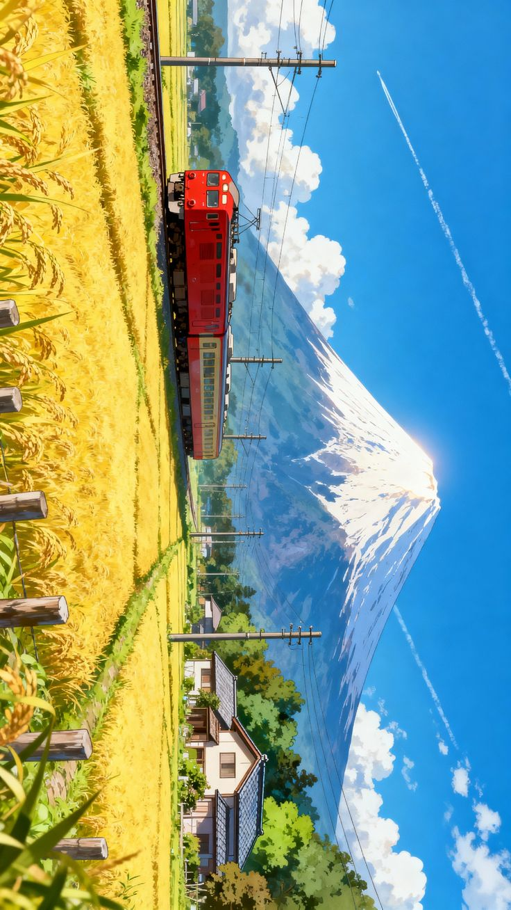
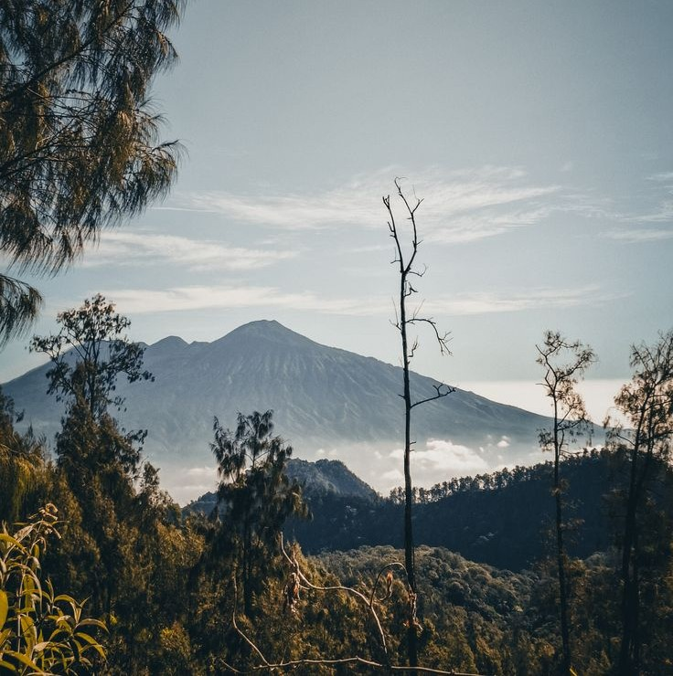
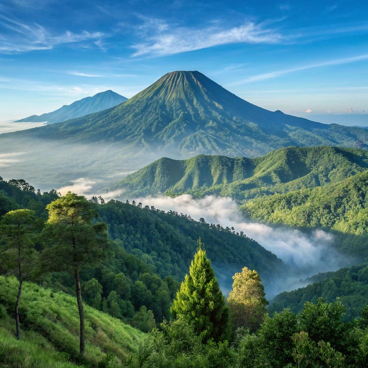
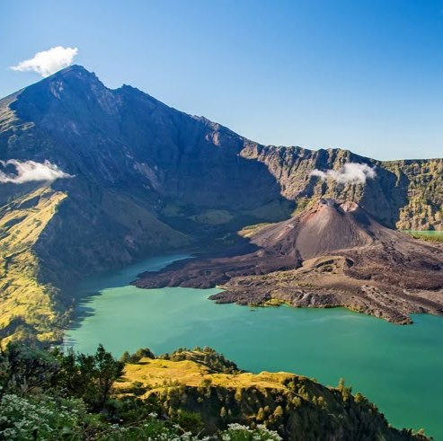

TravelYuk hadir untuk kamu yang ingin menjelajahi dunia tetapi tidak mempunya teman untuk memulai, kami disini bisa menemani kalian berjelajah. Mulai dari gunung, pantai, hingga kota impian, kami menyediakan berbagai pilihan destinasi terbaik untuk perjalananmu. Yuk, wujudkan liburan impianmu bersama kami!

Gunung Arjuno adalah gunung api tidak aktif tertinggi kedua di Jawa Timur ( 3.339mdpl) setelah Semeru, terletak di perbatasan Kota Batu, Kab. Malang, dan Kab. Pasuruan. Dikelola oleh Tahura Raden Soerjo, gunung ini terkenal dengan Puncak Ogal-Agil, trek pendakian panjang, dan aura mistis.

Gunung Merbabu adalah gunung api tipe stratovolcano aktif yang terletak di Jawa Tengah, melintasi Kabupaten Magelang, Boyolali, dan Semarang. Dengan ketinggian 3.145 mdpl, Merbabu terkenal dengan sabana luas, pemandangan sunrise yang memukau, bunga edelweis, serta menjadi favorit pendaki melalui jalur Selo, Suwanting, Wekas, Cunthel, dan Thekelan..

Gunung Rinjani adalah gunung berapi aktif tertinggi kedua di Indonesia, menjulang 3.726 mdpl di Pulau Lombok, NTB. Ikonik dengan Danau Segara Anak di kalderanya, gunung ini menawarkan pemandangan savana, hutan, dan mata air panas. Rinjani merupakan destinasi favorit pendaki, termasuk Seven Summits Indonesia.